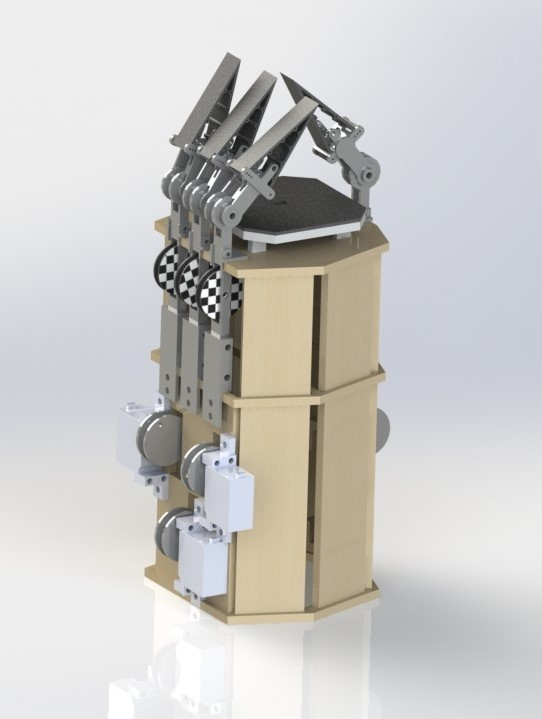
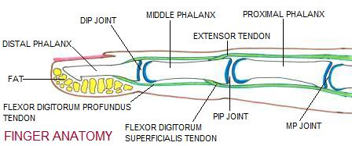
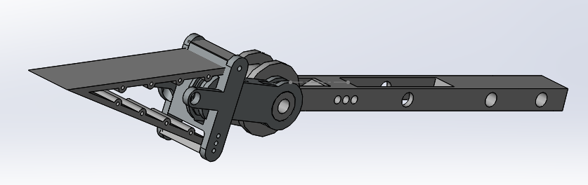
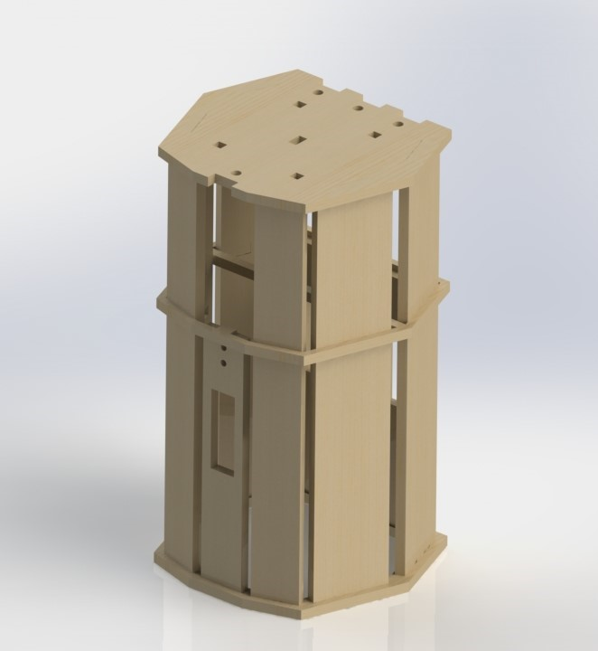

Tenacity is tendon-driven robotic hand with four compliant fingers capable of grasping a variety of size and shape objects.
Aligning with our design goals of anthropomorphism, the anatomy of our robot fingers are modelled after a human’s, with rotation about proximal interphalangeal joints (PIP) and distal interphalangeal joints (DIP). We chose to attempt to mimic the finger structure, the tendon’s effect on joints, as well as the compliant nature of a finger tip.
The finger’s top digit has entirely underactuated compliance, heavily inspired by FESTO’s fintail gripper. We fabricated this design out of 3D printable flexible filament, such that the fingers would mold to the shape of the object when pushed with enough force. Our design features two kinds of flexible filament: TPU and TPE. These materials offer different strength and rigidity which allows us to optimize our gripper and, as an added bonus, prevent the fingers from acting as a mechanical stop to each other’s motion when they collide.
Our distal digit (DIP) was designed shorter than it typically appears in the human hand due to our intent for the piece. We wanted it to provide us with the rotation into the palm while maximizing the contact our flexible fingertips could have with the object. We additionally designed the proximal digit (PIP) to be connected to our “arm”. This allowed us to have a proximal joint but also allowed us to simplify the design slightly by not including another digit for mounting.
To actuate this system, two strings are threaded from the top mounting hole on the distal phalanx, around the DIP pulley, and down to spool adaptors on each servo. By winding the string in opposite directions, we are able to control the finger to move to both the closed and open position. These strings are what we refer to as the system’s “active tendons”.
Due to challenges faced with properly tensioning these strings/them slackening over time, we also added a “passive tendon” in the form of surgical tubing on each finger. The elastic is tied off from the distal phalanx to the proximal phalanx, tending the system to rest or return to its open state.
The palm consists of multiple parts whose functions range from mounting to assisting with the grip. We have a layer of flexible filament on the top of the palm that serves as an additional contact point when the hand is gipping an object. The increased area of contact allows for us to have a better grip on object than if we had simply a rigid surface. We additionally designed our smaller palm to be raised to the optimal height to assist the fingers with gripping. The bottom section of the palm allows for the fingers to be mounted and the IR sensor to be set up.
Since the palm and fingers require clearance to grab objects, we designed an arm subassembly to house the motors, transmission, and electronics.
As the tendon system operates with linear motion, we began by using linear actuators to control the fingers’ motion. However, we soon realized that servos provided additional power that was necessary for proper grip strength. Thus, we transitioned to 180 degree Standard Analog Servos, using one per finger. We fabricated custom spool adaptors on the servo to transfer rotational to linear motion. To further translate this motion up to the fingers, we employed the pulley system as described in the Finger section above.
In order to maximize the curling behavior of the flexible finger tips, the fingers needed to mounted parallel to each other. Aligning the fingers along a curved palm would have inefficiently positioned the fingers to grab an object. To satisfy this design constraint without compromising the aesthetics of the system, we settled on a irregular octagonal cross section for the arm. This allowed one flat face to house three fingers directly opposite to a shorter face that housed the thumb.
Eight foot-long laser cut panels provide encasing for the interior electronics of the system and external housing for the servo motors and finger digits.
The simple design of the arm is self-securing: the panels sit precisely in an octogonal base via mortise and tenon joints, while a thin octogonal brace both supports the panel sides and provides a holding bar for human interaction.
{kind=link}
{kind=link}
{kind=link}
{kind=link}